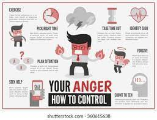

THINK IT'S DIFFICULT TO HOLD YOURSELF AT EXTREME TIMES?

Well, this is the website that'll help you. All you need is, a calm reading of these methods to deal with anger.
WAYS TO DEAL WITH ANGER
THINK BEFORE YOU SPEAK
ONCE YOU'ARE CALM, EXPRESS YOUR ANGER
GET SOME REST AND EXERCISE
TAKE A TIME OUT
IDENTIFY POSSIBLE SOLUTIONS
STICK WITH 'I' STATEMENTS
DON'T HOLD A GRUDGE
USE HUMOUR TO RELEASE TENSION
PRACTICE RELAXATION SKILLS
KNOW WHEN TO SEEK HELP
HOW TO APPLY ABOVE POINTS?
THINK BEFORE YOU SPEAK
This one is easy but efficient. When you are a part of a heated debate, it is likely for you to come across the time when you want to say something rude and harsh to the othe person but then you usually regret it later. So it is the best to think over your words and actions before you speak or act them out.
ONCE YOU'ARE CALM, EXPRESS YOUR ANGER
Being rash and rude with words is always just detrimental. Rather, if you want to take action, first calm yourself down a the moment and instead of hurting others with insensitive comments or trying to control them, take your rage out in efficient and calm manners, not in confrontational ways.
GET SOME REST AND EXERCISE
If you feel angry or frustrated with anything, take some rest, some sleep or the most-efficient of all, calm yourslef down with a few minutes' workout and exercises. Practice yoga and refreshen your mood with the relaxation of mind. These efficient means of developing self-control will help you in the future times and you will be able to find out solutions to the problems you weren't able to identify hot-headedly.
TAKE A TIME OUT
This one might seem amusing but is really helpful and beneficial. People usually take time-outs for granted and think that this is onoly for kids to play. But this is a mistaken point. Getting yourself too worked out is another point that leads to frustration and tiredness when you actually confront a situation where you require energy and because of which you burst out and as a result say things which you shouldn't. Getting some time out is not only for meditation or playing with your loved ones for relaxation but instead can also mean to do the things, you find happiness in.
IDENTIFY POSSIBLE SOLUTIONS
The most important and basic thing here to understand is that anger will only make the matter worse and it won't help fixing anything. Rather than working out your mind on finding out the source of your anger, just start figuring out the ways in which you can resolve these issues without harm or discomfort to any involving party.
STICK WITH 'I' STATEMENTS
The 'I' stamtements here mean the statements you use to converse back but that involves your own actions or opinions as well. Rather than just putting the blame on a certain opposite person, start involving your emotions and figure out issues together with a calmer state of mind while you discuss out the problems. For example: Rather than saying 'You always hurt my emotions' say 'I understand what you say but please be a bit more polite.'
DON'T HOLD A GRUDGE
Whenever we get into a fight or debate, we should let go of things rather than just holding on to them for a longer time because that only affects our mental state or mind and we get irritated easily.
USE HUMOUR TO RELEASE TENSION
Using humour to release tension is another method that helps in calming anger. We should avoid sarcasm and harshness as far as possible and humour can possibly turn the most-depressing situations into heppening and happy moments.
PRACTICE RELAXATION SKILLS
When your anger reaches a high level, start avoiding the situation because manier times negligence does what even proper care doesn't. So, when you think anger you should not converse back and your anger is rising, start relaxing your scene. For this, you can imagine a scene that includes nature, mountains or etc. to calm down or start repeating a phrase like 'no, don't, calm, take it easy' so hold yourself back and ignore the things.
KNOW WHEN TO SEEK HELP
This is a necessary action that you should take care of. When your anger at all times reaches an ultimate level and you find it difficult to stop the actions you act that you will later regret then you should seek help from a loved one of yours or maybe a professional counselor who might help you deal with anger at proper stages using efficient means.